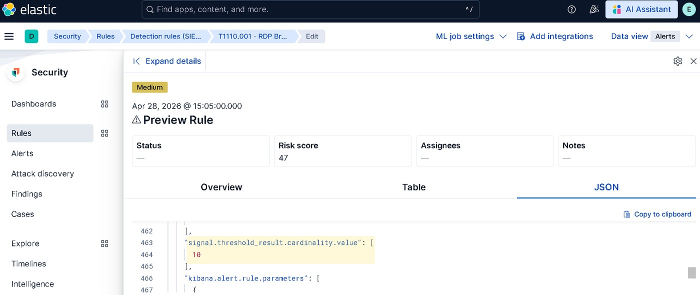
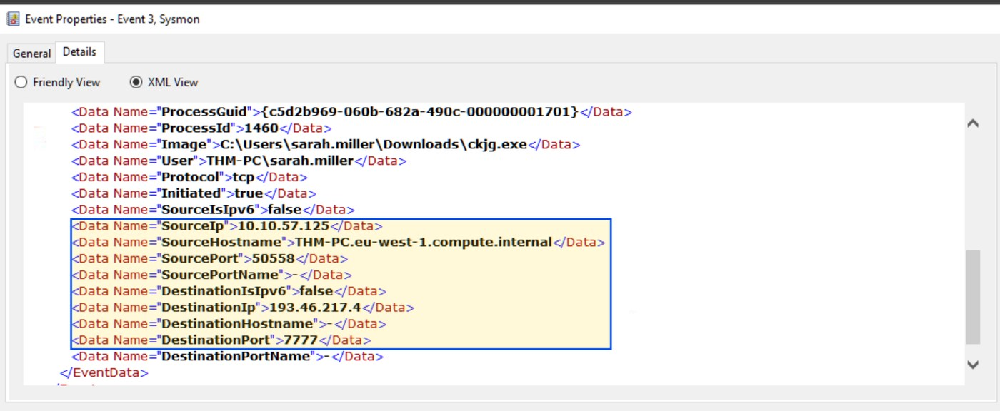
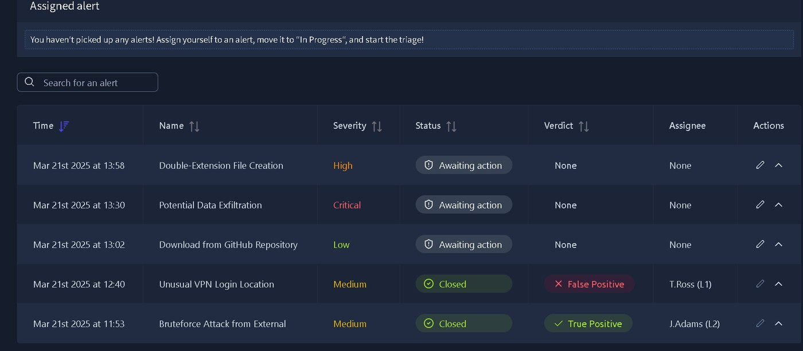

I work through alerts the way an analyst does: read the telemetry, decide True or False Positive, and write down why. In my lab projects I traced a Windows breach from account creation to C2, correlated Splunk logs across Windows, Linux and web servers, and cut a noisy Elastic detection rule from 22 alerts to 1.
Chennai, India · M.Sc Cyber Forensics & Cyber Security (completed May 2026)
Karthik SSOC · Blue Team
6documented projects, each with a public write-up
3SIEM / XDR platforms used in projects: Splunk, Elastic, Wazuh
22 → 1alerts after reworking a recon detection rule (lab)
3 mosecurity internship, Sworks Infotech (2025)
01 / About
About me
I'm an entry-level cybersecurity professional focused on SOC monitoring, incident triage, log analysis and detection engineering. My project work covers triaging simulated SIEM alerts through to a verdict and remediation, reconstructing a full Windows breach across three log sources, and writing and tuning detection rules in Elastic Security.
I studied Forensic Science (B.Sc) and then Cyber Forensics & Cyber Security (M.Sc, completed May 2026), so I tend to work evidence-first: write down what the logs show, then decide what it means. During a security internship at Sworks Infotech I worked with SIEM and IDS/IPS tools and did network traffic analysis.
I'm looking for an entry-level SOC Analyst or Incident Response role where I can keep building toward detection engineering and threat hunting.
What I can show
Alert triage with written True/False Positive reasoning
Correlating Windows, Linux and web server logs
Writing and tuning detection rules in KQL and EQL
Incident notes and L1 → L2 escalation
Forensic, evidence-first investigation habits
02 / Cybersecurity projects
Investigations & detection work
All six are hands-on labs (TryHackMe environments), not production incidents. Open a card for the findings, evidence and recommendations, or go to the full write-up on GitHub.
Researched an attack chain (RDP brute force, recon, credential dumping, lateral movement) and wrote atomic, stateful, correlation and anomaly-style detections for it, then tuned a noisy rule.
Key result: recon rule reworked from 22 alerts to 1
Spray detected: 50 failures, 10 usernames, one IP
View investigation details
What I built
Atomic: custom query rule for recon commands. Removed a false positive (ngentask.exe) and added a missed tool (nltest.exe). Preview fired 22 alerts, one per command.
Stateful: threshold rule on failed network logons, grouped by source.ip with a minimum of 5 distinct usernames. Medium severity, risk score 47.
Correlation: EQL sequence for 10+ failed logons followed by a successful RDP logon from the same IP within 5 minutes. High severity, risk score 73, with alert suppression on source.ip to stop duplicate alerts.
Tuning & anomaly work
Tuning: rebuilt the recon rule as a threshold rule grouped by host.name and LogonId (3 or more commands per session). The attacker's session was the single remaining alert.
Anomaly: shown conceptually in Discover (service-install baseline on one host) because the lab licence did not include ML rules.
Takeaway: research the technique and the data source before writing the query; plan to tune every rule.

Elastic Security: preview of the password-spray threshold rule (Medium, risk score 47).
Lab: TryHackMe · Host THM-PC · Windows Security Logs · Sysmon · PowerShell history
Rebuilt the full kill chain of a simulated Windows compromise from three log sources, from account creation to C2 communication, and extracted IOCs with a prioritized response plan.
Persistence: Startup-folder URL shortcut
C2: 193.46.217.4:7777
View investigation details
Findings
Unauthorized local account svc_sysrestore created and added to Backup Operators.
ckjg.exe downloaded through Chrome by one user, then executed.
Persistence via DeleteApp.url in the Startup folder.
DNS lookup of hkfasfsafg.click and an outbound connection to the C2 address.
PowerShell history showed recon and system changes by a second user.
Recommendations
Isolate the host; terminate the malware and remove the startup link.
Delete the rogue account and audit Backup Operators changes.
Block the C2 IP and domain at the firewall.
Rotate credentials for the affected accounts.
Submit the file and domain to threat intelligence platforms.

Sysmon Event ID 3: the malware's connection to the C2 server on port 7777.
Lab: TryHackMe · Splunk · SPL · Sysmon · Linux auth logs · web server logs
Investigated alerts across Windows, Linux and a web server in Splunk and tied them into one multi-stage intrusion, with a severity rating and fix for each finding.
Worked through the platform side of a SIEM: agents, IT hygiene, compliance scoring, vulnerability detection and how logs become alerts through decoders and rules.
Hunt result: Cobalt Strike signature in Defender events
Linux CIS score: 46%
View project details
What I did
Reviewed Windows and Linux agents: hardware, listening ports, local users and installed software.
Read CIS benchmark results and CVE findings, for example the latest Notepad++ CVE on the Windows agent.
Queried Defender events in Discover and found Trojan:Win32/CobaltStrike.PU!MTB.
Concepts covered
Group-level log collection (Linux auth log, Windows Defender and Sysmon channels).
Decoders and a two-stage PowerShell rule chain (broad collection, then a level-12 alert).
File Integrity Monitoring, Active Response and compliance mapping, reviewed rather than built.
Worked an alert queue by severity and age and wrote a verdict with analyst notes for each alert. Two of the three alerts were false positives, and the write-up explains why.
Verdicts: 1 True Positive, 2 False Positives
Highest severity alert: Critical, but benign (Zoom)
View investigation details
Cases
Critical, False Positive: 5.8 GB upload flagged as exfiltration; destination was Zoom from a meeting-room device.
High, True Positive:.mp4.exe double-extension file downloaded from a lure domain.
Low, False Positive: a developer cloning the official React repository.
Response for the True Positive
Isolate the host and quarantine the file.
Check process logs for anything the file spawned.
Block the lure domain and notify the user.
Escalate to Tier 2 if lateral movement or persistence appears.

The alert queue, sorted by severity and time before assignment.
Open to entry-level SOC Analyst, Security Analyst and Incident Response opportunities. Email or LinkedIn is the quickest way to reach me, and I'm happy to set up a call from there.